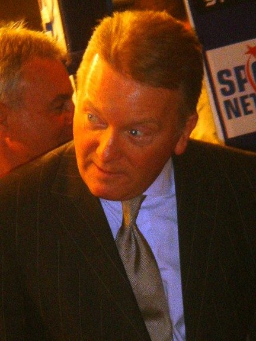

Даниэль Дюбуа проведет защиту титула WBO в супертяжелом весе против Джозефа Паркера в Манчестере
Битва супертяжеловесов на арене Co-op Live 30 января 2027 года закроет старый счет после сорвавшегося поединка 2025 года.

Даниэль Дюбуа проведет вторую защиту титула чемпиона мира по версии WBO в супертяжелом весе против экс-чемпиона Джозефа Паркера в Манчестере на арене Co-op Live в субботу, 30 января 2027 года. Промоутер Фрэнк Уоррен и компания Queensberry Promotions официально анонсировали поединок под вывеской «New Year's Retribution» («Новогоднее возмездие») 25 ноября 2026 года; права на прямую трансляцию закрепил за собой стриминговый сервис DAZN.
29-летний Дюбуа подходит к этому противостоянию с послужным списком из 24 побед и трех поражений, причем 23 виктории лондонец одержал досрочно. Пояс WBO британский супертяж завоевал в мае 2026 года, победив Фабио Уордли техническим нокаутом в 11-м раунде на той же самой манчестерской арене, а 17 октября в незамедлительном лондонском реванше нокаутировал Уордли всего за два раунда. Ранее Дюбуа владел титулом IBF, который он успешно защитил в сентябре 2024 года, сокрушив Энтони Джошуа на глазах у 96 000 зрителей на стадионе «Уэмбли».
Незакрытый счет из Эр-Рияда

Январский бой вернет на ринг афишу, изначально запланированную на февраль 2025 года в Эр-Рияде (Саудовская Аравия). Тогда Дюбуа снялся буквально на неделе боя из-за болезни, и Паркеру пришлось драться с вышедшим на коротком уведомлении Мартином Баколе, которого новозеландец нокаутировал уже во втором раунде.
Впоследствии Дюбуа освободил пояс временного чемпиона, прежде чем вернуть себе полновесный мировой титул в поединке против Уордли. «Даниэль выходит на свой пик, и когда он ловит свой кураж, сложно вообще представить кого-то, кто способен его одолеть, — заявил Уоррен в официальном анонсе Queensberry. — Но Джозеф давно обещал вновь стать чемпионом мира, и сейчас судьба дает ему этот шанс».
Путь Паркера обратно к титулу
34-летний Паркер имеет в активе 36 побед и четыре поражения при 24 нокаутах. Уроженец Окленда удерживал титул WBO с декабря 2016 по март 2018 года, пока не уступил его по очкам Джошуа в Кардиффе. В чемпионскую гонку новозеландец триумфально вернулся на стыке 2023 и 2024 годов, поочередно деклассировав судейскими решениями экс-чемпионов Деонтея Уайлдера и Чжана Чжилэя.

Претендент не боксировал с октября 2025 года, когда досрочно уступил в поздних раундах Уордли. После того боя Паркер получил временную допинговую дисквалификацию, однако в августе 2026 года все претензии с него были официально сняты.
Расклад в супертяжелом весе на 2027 год
Шоу в Манчестере откроет спортивный календарь 2027 года в дивизионе, где остальные пояса сосредоточены в руках объединенного чемпиона Александра Усика и обладателя титула IBF Филипа Хрговича. Победитель противостояния на Co-op Live получит прямую путевку в переговоры об объединении поясов в конце года: Дюбуа жаждет статуса абсолютного чемпиона, а Паркер нацелен начать свое второе правление с поясом WBO спустя девять лет после первого триумфа.